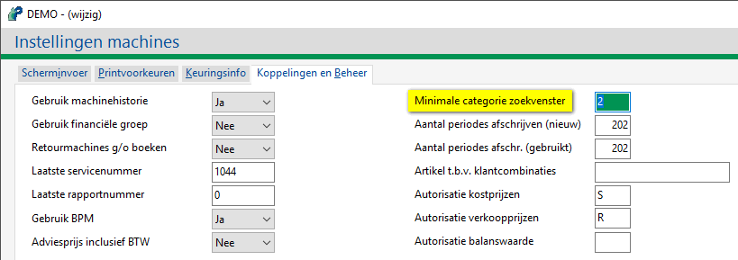
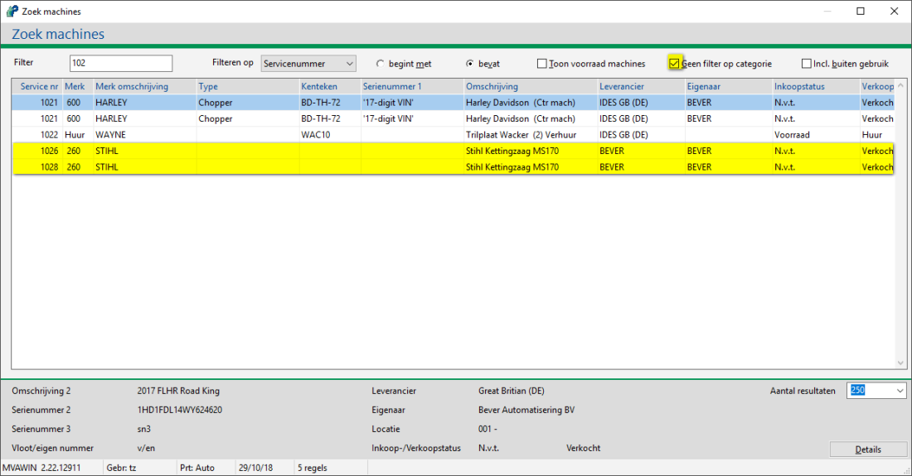

Door het instellen van een machine categorie is het mogelijk om bijv. speciale - of kleine machines zoals een boormachine of kettingzaag, niet te tonen bij het standaard zoekvenster.
Het volgende moet ingesteld worden:
Bij Onderhoud machine (hoofd- en sub) groepen moet voor elke groep een categorie ingesteld worden:
| Categorie | De betreffende categorie. Deze categorie dient om bepaalde machines al of niet te tonen bij het zoekvenster machines vanuit werkorders. Bijv. kleine machines worden niet getoond. |
De machines die je niet wil zien, zet je bijv. op categorie 1 en de rest hoger.
Opmerking: Bij alle machine groepen moet de categorie worden ingesteld, anders zijn de machines niet zichtbaar bij Zoek machines.
Bij Instellingen machines, tabblad Koppelingen en Beheer, kan de minimale categorie zoekvenster ingevuld worden.
Zet deze bijv. op 2.

Bij Zoek machines is het aanvink vakje Geen filter op categorie zichtbaar.
Standaard worden de machines van categorie 2 of hoger getoond.
Als dit vakje wordt aangevinkt, worden de kleine machines, categorie van bijv. STIHL wel getoond.

MVAWINStandaard zijn de gele gearceerde machines niet zichtbaar.
Gerelateerde onderwerpen
Copyright ©